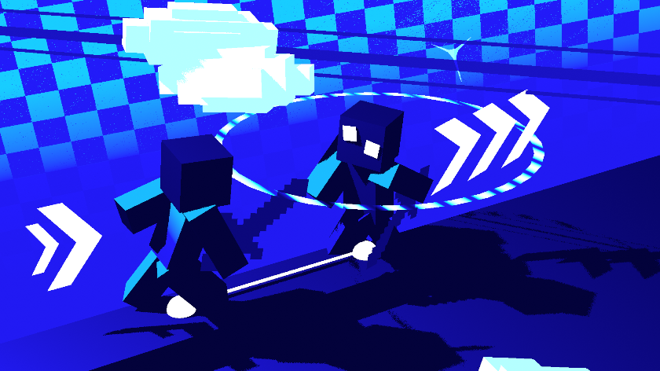
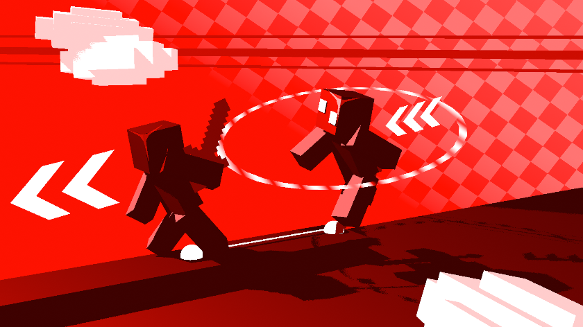

Movement Syncing
Monitors the target's lateral movement and uses your movement keys to hold spacing, chase when they move away, or back off when they close the gap.


Requires Fzzy Config & Mod Menu for configuration
This is a simple utility mod made for Sword PVPers. By default, movement syncing and movement resisting help you stay just out of range of sword opponents, then let you know when to move inward after they miss an attack.
The free version is singleplayer-focused to comply with CurseForge guidelines. Get the full version through Patreon or the website for wider access.
You also get access to in dev features and exclusive features from the Patreon.
Patreonentirely configurable

Monitors the target's lateral movement and uses your movement keys to hold spacing, chase when they move away, or back off when they close the gap.

Creates a clientside target-centered spacing bubble that helps prevent accidental over-commits while still allowing free movement when you are already deep inside the bubble.
Triggers a sprinting jump when you are far away from your target, helping you close distance with cleaner pressure.
Can stop or reverse backward syncing when a sprinting target enters your range, preparing you to counter with a jump or parry crit attempt.
Chooses the fastest movement key press to help you escape out of the spacing bubble more easily.
Jumps after a sprint hit so you can maintain pressure instead of being left behind the resist boundary.
Automatically taps S after successful strikes to reset spacing and keep sword pressure cleaner.
Helps you only hit your opponent when they are actually in range.
Clientside particles and sound effects help you read the resist boundary and spacing behavior.
recommended settings as of August 29, 2026
If this list is inaccurate, warn others in the DISCORD. Spam clicking while using these may create duplicate packets, which can be detected.
quick downloads
Free nonpremium JAR
Download JAR